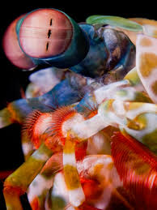
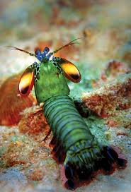
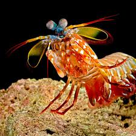
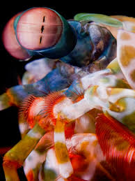
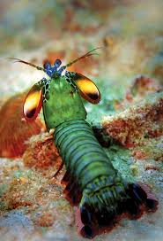
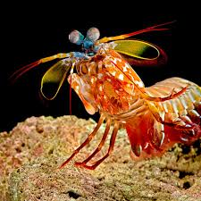

2. Mantis Shrimp
The mantis shrimp can detect a wider range of colors than humans, seeing ultraviolet light and polarized light through its 16 types of photoreceptor cells. This extraordinary vision allows it to be highly responsive to changes in light conditions, detecting prey, predators, and mates. The mantis shrimp is also renowned for its incredibly fast and powerful strike, reaching speeds of up to 50 miles per hour. This ability to strike with precision and force allows it to capture prey instantly. Furthermore, the mantis shrimp communicates using color changes and vibrations, responding to social and environmental cues. Its behavior is also highly adaptive, as it creates burrows and adjusts its hunting strategies based on the presence of food or predators.
 




